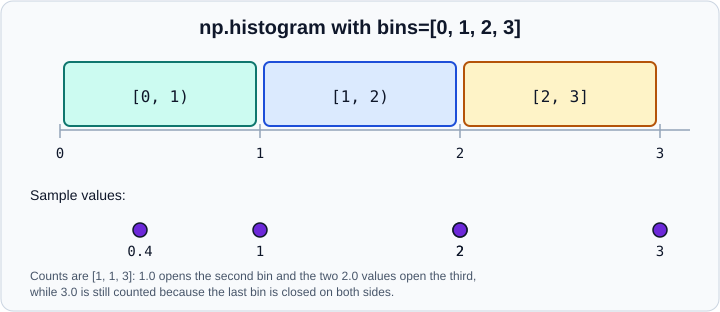

Statistics & Histograms
|
This content was generated with the assistance of AI and should be verified against the official documentation before being relied on in production. |
This page targets NumPy 2.5 (2.5.4 at the time of writing), and every example was run with NumPy 2.5.4 in October 2026. Examples target Python 3.13 or 3.14 and were run on Python 3.13. It covers the descriptive-statistics functions in numpy: averages, spread, order statistics, histograms, counting and binning, and covariance and correlation. These are building blocks; for tables of summaries, grouped statistics and missing-data handling on labelled data use pandas, and for hypothesis tests, distributions and models use SciPy and statsmodels. The concepts themselves (spread, sampling, confidence) are explained in Statistics Fundamentals, and the R equivalents are in Descriptive Statistics and Tests in R. Axis rules shared by all the functions below are explained in Reductions & Axis Semantics.
Averages and extremes
import numpy as np
x = np.array([2.0, 4, 4, 4, 5, 5, 7, 9])
print(x.mean(), np.median(x))
print(x.min(), x.max(), x.argmax(), np.ptp(x)) # ptp is max - min
print(np.cumsum([1, 2, 3]), np.diff([1, 4, 9]), np.cumprod([1, 2, 3]))Output:
5.0 4.5 2.0 9.0 7 7.0 [1 3 6] [3 5] [1 2 6]
Source: NumPy: Statistics
-
mean,sum,min,max,std,varexist as both functions and array methods and takeaxis,dtype,out,keepdimsandwhere. -
The array method
ndarray.ptpwas removed in NumPy 2.0; call the functionnp.ptp(x)(hasattr(x, "ptp")isFalsein NumPy 2.5). -
np.mediantakesaxis,keepdimsandoverwrite_input. For an even count it returns the mean of the two middle values.
import numpy as np
a = np.array([[1, 2, 3], [4, 5, 6]])
print(a.mean(axis=0)) # per column
print(a.mean(axis=1, keepdims=True)) # per row, shape (2, 1) for broadcasting
print(a.sum(where=a > 2), a.mean(where=a > 2)) # only the selected elements
print(np.median([[1, 2], [3, 4]], axis=1, keepdims=True))Output:
[2.5 3.5 4.5] [[2.] [5.]] 18 4.5 [[1.5] [3.5]]
Source: NumPy: Statistics
Weighted averages
np.average(a, axis=None, weights=None, returned=False) computes a weighted mean. The weights must match the shape of a, or be one-dimensional with the length of the chosen axis.
import numpy as np
print(np.average([1, 2, 3], weights=[3, 1, 1]))
print(np.average([[1, 2], [3, 4]], axis=0, weights=[1, 3]))
print(np.average([1, 2, 3], weights=[3, 1, 1], returned=True)) # also the sum of weightsOutput:
1.6 [2.5 3.5] (np.float64(1.6), np.float64(5.0))
Source: numpy.average
Spread: std, var and ddof
std and var divide by n - ddof. The default ddof=0 is the population formula; for a sample estimate of the population variance use ddof=1. NumPy 2.0 added an Array-API-style synonym, correction, for ddof, and a mean= argument to reuse an already computed mean.
import numpy as np
x = np.array([2.0, 4, 4, 4, 5, 5, 7, 9])
print(x.std(), x.std(ddof=1))
print(np.var(x), np.var(x, ddof=1))
print(np.std(x, correction=1)) # the same as ddof=1
print(np.std(x, mean=x.mean(), ddof=1)) # reuse a precomputed meanOutput:
2.0 2.138089935299395 4.0 4.571428571428571 2.138089935299395 2.138089935299395
pandas does the opposite: Series.std() defaults to ddof=1, so the same data gives different numbers in the two libraries unless you align ddof. See pandas.
With too few observations (ddof greater than or equal to the count) NumPy returns nan and emits RuntimeWarning: Degrees of freedom <= 0 for slice. The mean of an empty array returns nan with RuntimeWarning: Mean of empty slice.
Source: numpy.std
NaN-aware functions
The ordinary functions propagate nan. The nan family ignores it: nansum, nanprod, nanmean, nanmedian, nanstd, nanvar, nanmin, nanmax, nanargmin, nanargmax, nanpercentile, nanquantile, nancumsum, nancumprod.
import numpy as np
y = np.array([1.0, np.nan, 3.0])
print(y.mean(), np.nanmean(y), np.nanmedian(y), np.nanstd(y), np.nanmax(y))
print(np.nanquantile(y, 0.5), np.nansum(y), np.nanvar([1, np.nan, 3], ddof=1))
print(np.max(y), np.fmax(y, 0), np.nanargmax(y))
print(np.nancumsum([1, np.nan, 2]))Output:
nan 2.0 2.0 1.0 3.0 2.0 4.0 2.0 nan [1. 0. 3.] 2 [1. 1. 3.]
Source: numpy.nanmean and numpy.nanquantile
np.nanmean([np.nan, np.nan]) returns nan and warns Mean of empty slice. np.fmax and np.fmin ignore nan elementwise but are binary ufuncs, not reductions. The count of non-missing values is np.count_nonzero(~np.isnan(y)).
Alternatively use a masked array when the same missing mask is used throughout (Masked Arrays), or where= with ~np.isnan(y).
Accuracy and dtypes of reductions
sum and mean use pairwise summation, which keeps the rounding error small even in float32. Integer input to mean is converted to float64; small integer types in sum are widened to the platform integer; float16 stays float16. Ask for a wider accumulator explicitly when it matters.
import numpy as np
f32 = np.full(10_000_000, 0.1, dtype=np.float32)
print(f32.sum(), f32.mean(), f32.mean(dtype=np.float64))
print(np.mean(np.array([1, 2, 3, 4], dtype=np.int8)).dtype)
print(np.mean(np.array([1, 2], dtype=np.float16)).dtype)
print(np.array([200, 100], dtype=np.uint8).sum().dtype)Output:
1.0000001e+06 0.10000001 0.10000000149011612 float64 float16 uint64
Precision in NumPy 2 follows Type Promotion (NEP 50). The float32 sum above is accurate to about seven digits, while mean(dtype=np.float64) shows the actual value stored in float32 (0.1 is not representable exactly).
Source: numpy.mean
Percentiles and quantiles
np.quantile(a, q, axis=None, out=None, overwrite_input=False, method="linear", keepdims=False, *, weights=None) takes q between 0 and 1. np.percentile is the same with q between 0 and 100 (values outside raise ValueError: Percentiles must be in the range [0, 100]).
import numpy as np
d = np.array([1, 2, 3, 4, 10.0])
print(np.percentile(d, [25, 50, 75]))
print(np.quantile(d, [0.25, 0.5, 0.75]))
print(np.quantile(np.array([[1, 2], [3, 4]]), 0.5, axis=0))
print(np.quantile(d, [0.1, 0.9], keepdims=True).shape)Output:
[2. 3. 4.] [2. 3. 4.] [2. 3.] (2, 1)
Source: numpy.percentile and numpy.quantile
The method argument
A quantile of a finite sample has no single definition. NumPy implements the nine Hyndman and Fan types and four more, selected with method. The default "linear" interpolates linearly between order statistics (Hyndman and Fan type 7, the default of R’s quantile, and of pandas). For the data [1, 2, 3, 4, 10]:
method |
q = 0.3 | q = 0.9 |
|---|---|---|
|
2.0 |
10.0 |
|
2.0 |
10.0 |
|
2.0 |
4.0 |
|
1.5 |
7.0 |
|
2.0 |
10.0 |
|
1.8 |
10.0 |
|
2.2 |
7.6 |
|
1.93 |
10.0 |
|
1.95 |
10.0 |
|
2.0 |
4.0 |
|
3.0 |
10.0 |
|
2.5 |
7.0 |
|
2.0 |
10.0 |
The discontinuous methods (inverted_cdf, averaged_inverted_cdf, closest_observation, lower, higher, midpoint, nearest) always return an observed value or a midpoint of two, which is what you want for discrete or ordinal data. The continuous ones interpolate and suit measurements. When you compare with another tool, match the method: that is the usual cause of "NumPy gives a different quartile".
import numpy as np
d = np.array([1, 2, 3, 4, 10.0])
for method in ("linear", "lower", "higher", "midpoint", "nearest", "weibull"):
print(f"{method:10s}", np.quantile(d, 0.3, method=method))Source: numpy.quantile
Weights
NumPy 2.0 added weights= to quantile and percentile. Only method="inverted_cdf" supports it, and any other method raises ValueError.
import numpy as np
d = np.array([1, 2, 3, 4, 10.0])
print(np.quantile(d, 0.5, weights=[1, 1, 1, 1, 4], method="inverted_cdf"))
try:
np.quantile(d, 0.5, weights=[1, 1, 1, 1, 4])
except ValueError as err:
print(err)Output:
4.0 Only method 'inverted_cdf' supports weights. Got: linear.
Source: numpy.quantile
The weights are treated as frequency weights (an observation with weight 4 counts as four copies).
Removed argument names
The interpolation= argument of percentile, quantile, nanpercentile and nanquantile was deprecated in NumPy 1.22 in favour of method= and removed in NumPy 2.4. Code from older tutorials, such as np.percentile(x, 50, interpolation="lower"), now raises TypeError: percentile() got an unexpected keyword argument 'interpolation'. Use method="lower". The same removal batch took out np.trapz (use np.trapezoid) and np.in1d (use np.isin); hasattr(np, "trapz") is False in NumPy 2.5.
Source: numpy.quantile
Histograms
np.histogram(a, bins=10, range=None, density=None, weights=None) returns the counts and the bin edges (one more edge than counts).
import numpy as np
rng = np.random.default_rng(0)
s = rng.normal(size=1000)
counts, edges = np.histogram(s, bins=5)
print(counts, edges.round(2))
counts, edges = np.histogram(s, bins=[-4, -1, 0, 1, 4], density=True) # explicit edges
print(counts.round(3), (counts * np.diff(edges)).sum()) # density integrates to 1
counts, edges = np.histogram(s, bins=4, range=(-2, 2)) # values outside are dropped
print(counts, counts.sum())
print(np.histogram(s, bins=3, weights=np.full(1000, 2.0))[0]) # sum of weights per binOutput:
[ 9 124 496 330 41] [-3.9 -2.51 -1.11 0.28 1.67 3.07] [0.056 0.367 0.317 0.05 ] 1.0 [147 367 317 132] 963 [ 92. 1480. 428.]
Source: numpy.histogram
-
All bins are half-open,
[left, right), except the last, which is closed on both sides. -
rangedefaults to(a.min(), a.max()); values outside an explicitrangeare ignored, socounts.sum()can be less thanlen(a). -
density=Truenormalises so that the integral over the bins equals 1; this is not the same as the counts summing to 1 unless all bins have width 1. -
weightssums weights per bin instead of counting. -
A
nanin the data with the default range raisesValueError: autodetected range of [nan, nan] is not finite. Filter or pass an explicitrange.

import numpy as np
print(np.histogram([0.4, 1, 2, 2, 3], bins=[0, 1, 2, 3])[0]) # [1 1 3]Source: numpy.histogram
Choosing the number of bins
bins accepts an integer, a sequence of edges or a string rule. Use histogram_bin_edges to see the edges without counting:
import numpy as np
rng = np.random.default_rng(0)
s = rng.normal(size=1000)
for rule in ("auto", "fd", "sturges", "doane", "scott", "stone", "rice", "sqrt"):
print(f"{rule:8s}", len(np.histogram_bin_edges(s, bins=rule)) - 1)
print(np.histogram_bin_edges([0, 1, 2, 10], bins=3))Output:
auto 27 fd 27 sturges 11 doane 12 scott 21 stone 13 rice 20 sqrt 32 [ 0. 3.33333333 6.66666667 10. ]
Source: numpy.histogram_bin_edges
"auto" uses the larger bin count of the Sturges and Freedman-Diaconis rules (the smaller bin width), so it is a good default for most data; "fd" is robust to outliers because it uses the interquartile range; "sturges" is only good for roughly normal, small data sets; "sqrt" and "rice" are simple, fixed-size alternatives. There is no best rule, and an extreme value stretches every bin when the rule depends on the range.
Two and higher dimensions
np.histogram2d(x, y, bins=10) returns the counts matrix and the two edge arrays, and np.histogramdd(sample, bins) handles any number of dimensions.
import numpy as np
rng = np.random.default_rng(0)
s = rng.normal(size=1000)
H, xedges, yedges = np.histogram2d(s, s**2, bins=3)
print(H.shape, H.sum()) # (3, 3) 1000.0
Hd, edges = np.histogramdd(rng.normal(size=(100, 3)), bins=2)
print(Hd.shape) # (2, 2, 2)In histogram2d the first axis of the result follows x and the second y; when plotting with imshow, transpose it, because images put the first axis on the vertical. Plotting histograms is covered in Data Visualization.
Source: numpy.histogram
Counting and binning
np.bincount(x, weights=None, minlength=0) counts occurrences of non-negative integers and is the fast way to tabulate class labels. np.digitize(x, bins, right=False) returns, for each value, the index of the bin it falls in.
import numpy as np
labels = np.array([0, 1, 1, 3, 1])
print(np.bincount(labels))
print(np.bincount(labels, weights=[0.5, 1, 1, 2, 1]))
print(np.bincount(labels, minlength=6))
print(np.digitize([0.2, 6.4, 3.0, 1.6], [0, 1, 2.5, 4, 10]))
print(np.digitize([1, 5], [0, 1, 5], right=True))Output:
[1 3 0 1] [0.5 3. 0. 2. ] [1 3 0 1 0 0] [1 4 3 2] [1 2]
bincount requires non-negative integers (it raises for negative values and for floats), and its output length is max(x) + 1, so a large label makes a large array. For arbitrary values use np.unique(x, return_counts=True), covered in Sorting, Searching & Counting. digitize needs monotonically increasing or decreasing bins, and values below the first edge get 0 and above the last get len(bins).
Source: numpy.bincount
Covariance and correlation
np.cov(m, y=None, rowvar=True, bias=False, ddof=None, fweights=None, aweights=None, *, dtype=None) and np.corrcoef(x, y=None, rowvar=True, *, dtype=None) treat each row as a variable and each column as an observation, the opposite of the usual tabular layout. Pass rowvar=False for data with variables in columns.
import numpy as np
rng = np.random.default_rng(0)
u = rng.normal(size=50)
v = 2 * u + rng.normal(size=50) * 0.5
w = rng.normal(size=50)
print(np.cov(u, v).round(3))
print(np.corrcoef(u, v).round(3))
M = np.vstack([u, v, w]) # 3 variables x 50 observations
print(np.cov(M).shape, np.corrcoef(M).shape)
print(np.cov(M.T, rowvar=False).shape) # observations x variables layout
print(np.cov(u, v, ddof=0)[0, 1].round(4), np.cov(u, v, bias=True)[0, 1].round(4))Output:
[[0.847 1.644] [1.644 3.446]] [[1. 0.962] [0.962 1. ]] (3, 3) (3, 3) (3, 3) 1.6108 1.6108
-
covdivides byn - 1by default;bias=Trueorddof=0divides byn. -
A variable with zero variance gives
nanincorrcoefand aRuntimeWarning: invalid value encountered in divide. -
np.covdoes not ignorenan; remove or impute missing observations first. -
corrcoefmeasures only linear association; see Exploratory Data Analysis for why the number alone misleads. -
np.correlate(a, v, mode="valid")is the cross-correlation of two sequences (a sliding dot product) with modes"valid","same"and"full", not the correlation coefficient:np.correlate([1, 2, 3], [0, 1, 0.5], mode="full")is[0.5, 2., 3.5, 3., 0.].
Source: numpy.cov
Where older tutorials are outdated
| Older statement | Current practice | Changed in |
|---|---|---|
|
|
method removed in NumPy 2.0 |
|
|
argument removed in NumPy 2.4 |
|
|
removed in NumPy 2.4 |
|
|
removed in NumPy 2.4 |
Weighted percentile by repeating the data |
|
|
|
It is the population one; use |
default unchanged; pandas differs |
Pitfalls
-
Using
np.stdornp.varwithout thinking aboutddof, and comparing with pandas (defaultddof=1). -
Quartiles that differ between tools because the
methoddiffers. -
np.histogrambins that depend on the range, so two histograms of different data sets have incomparable bins unless you pass the samebinsedges. -
Assuming
density=Truemakes counts sum to 1. -
nansilently propagating throughmean,std,covandcorrcoef. -
np.covandnp.corrcoefwith data laid out as rows of observations (a wrong-shaped, huge matrix). -
bincounton large or negative integers. -
Reading a scalar result as a Python float: it is an
np.float64, which prints asnp.float64(1.6)inside containers since NumPy 2.0 (NEP 51).